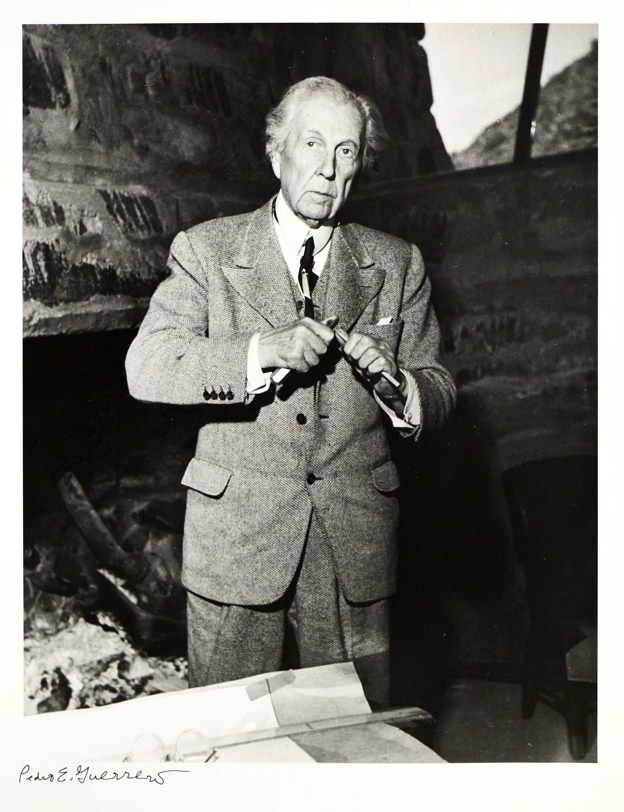
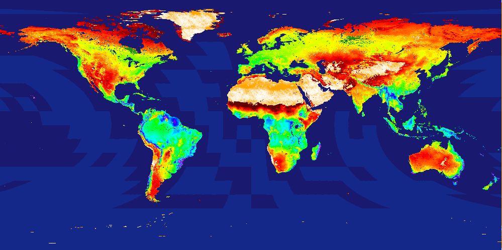
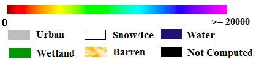
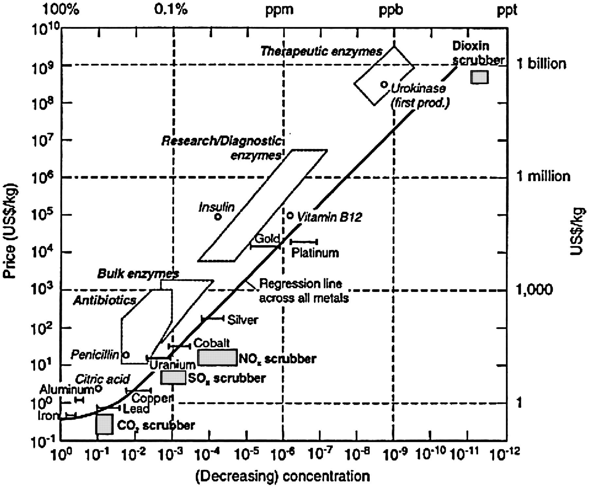
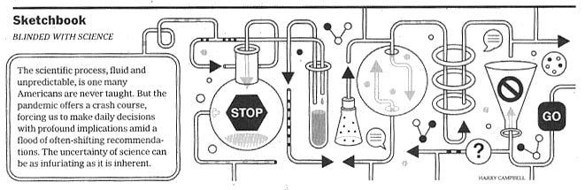

I’m Jonathan Burbaum, and this is Healing Earth with Technology: a weekly, Science-based, subscriber-supported serial. In this serial, I offer a peek behind the headlines of science, focusing (at least in the beginning) on climate change/global warming/decarbonization. I welcome comments, contributions, and discussions, particularly those that follow Deming’s caveat , “In God we trust. All others, bring data.” The subliminal objective is to open the scientific process to a broader audience so that readers can discover their own truth, not based on innuendo or ad hominem attributions but instead based on hard data and critical thought.
You can read Healing for free, and you can reach me directly by replying to this email. If someone forwarded you this email, they’re asking you to sign up. You can do that by clicking here .
If you really want to spread the word, then pay for a subscription. I use all the money collected to increase readership through Facebook ads.
Today’s read: 11 minutes.
I trust from the preceding issues that the difficulties involved in finding solutions to what pundits refer to as “the climate change problem” are appropriately intimidating. Pundits don’t add anything to the solution, but they do serve the useful purpose of raising awareness. But, in my view, they are far too quick to suggest that solutions are easy, “If only…”. Nonetheless, I remain optimistic about our special capability to solve this problem through applied technologies. I also believe that the obstacles we face are not technological. They’re human, so while you, dear reader, are part of the problem, you’re also part of the solution. So please stick with me here; I know where I’m going, and I’m hopeful.
Currently, many individuals and organizations seek to “address” the climate change problem, which, semantically, is pretty unsettling—as an occasional golfer, “addressing” the ball is what happens before you take a swing. But, unfortunately, addressing a problem without clear objectives or ways to measure progress tends to produce pointless quagmires like the war in Afghanistan. Plus, the political implication is that any opposition to “addressing” the issue means that there is no agreement on the rules or whether there’s even a problem to be solved in the first place. It’s sad, but like the anti-Science zealots on the anti-vaccine anti-mask train, there’s a lack of attention to data and an over-reliance on other people’s opinions. I’m all for freedom, but ignorance is a choice.
One of my (many) heroes has a word or two to say about this situation.

“And now, finally, we may see how all this was man’s sense of himself: how it all came to be by the simple way of human use and purpose, but how also, in all ages and all races, it was man’s greatest work wherein his five senses were all employed and enjoyed. By way of eye, ear, and finger, by tongue and even by nostril he was creating out of himself greater delights for a super-self, finding deep satisfactions far beyond those he could ever know were he merely a good animal.
But we are compelled to see, looking back upon this vast homogeneous human record, that the human race built most nobly when limitations were greatest and, therefore, when most was required of imagination in order to build at all. Limitations seem to have always been the best friends of architecture. The limitation in itself seems to be the artist’s best friend in the sum of all the arts, even now. Later, we must see how subjugation, sophistication, easy affluence and increasing facility of intercourse began to get things all mixed up until nothing great in architecture lived any more. All architecture became bastardized… Building had become so easy that architecture became too difficult .” [ Emphasis mine ] Frank Lloyd Wright in The Future of Architecture , Horizon Press (1953) pg. 55.
By analogy, we face a world today where expressing opinions has become so easy that thinking has become too difficult. As Americans, we managed to land men on the moon with less computer power than most of us carry in our pockets today! That required us to think !
The problem we face with carbon dioxide has myriad limitations that have been detailed in earlier installments. But, as Wright points out, what sets humans apart is our unique ability to imagine. As a group, we understand what limitations we face, from the Laws of Physics to the nature of human societies, and we can address each one individually. But, as in architecture, there are tradeoffs. We must be careful not to build willy-nilly without a thoughtful design that leads to a worthwhile outcome. Designing a solution around limitations, in essence, “architecture,” is vitally important since we may have only one crack at it. And it is difficult precisely because “building”, the process of implementing partial solutions without understanding limitations, has become too easy.
The story continues…
Let’s reiterate what the problem is. Stated concisely:
-
The increase in carbon dioxide levels in the atmosphere, attributable to human extraction and combustion of geologic carbon over 350 years of industrialization, threatens to destabilize Earth’s climates.
To solve this problem, we must somehow control the Earth’s atmosphere. Specifically, we need to adjust the amount of carbon dioxide it contains if we expect to regulate the planet’s temperature. Regardless of how you slice it, adjusting Earth’s “thermostat” will require “ geoengineering ”, in other words, an intentional process of applying human ingenuity (backed by Science).
What we know is that decarbonization, at least as far as we’ve taken it, is as (in)effective as a rain dance—tribes fervently believe that they’re doing something to affect the outcome (i.e., addressing climate change). But, like a rain dance, there’s a disconnect between the expectation of an effect and the size of the efforts relative to the problem. And, to make matters worse, we cannot afford to wait for clever new solutions.
But we do know one thing for sure.
Biological processes reduce atmospheric carbon dioxide.
As noted earlier, 1 from May through September, every year, the Earth’s biosphere absorbs as much carbon dioxide as humans add in a decade!
Photosynthesis is the natural mechanism by which Earth’s atmospheric carbon dioxide already subsides year over year. So, logically, if photosynthesis could somehow be ramped up, we would follow Nature’s course and capture more atmospheric carbon dioxide every growing season. But can we turn it up, given the constraints of the problem?
Let’s return to the global picture of photosynthesis:
On land (over one year):


..and in water (over one year):

I have kept the two images separate because different data is measured, of necessity. However, both images explain the annual decrease in carbon dioxide during the summer months. By inspection, there is more photosynthetic activity and/or chlorophyll in the Northern Hemisphere than in the Southern Hemisphere, both on land and in the ocean. It is highest on land near the equator and gets smaller at higher latitudes, with clear arid or desert land bands to either side. There is a substantial amount of aquatic photosynthesis because of nutrients distributed near shorelines, even in the polar regions. For now, I’m going to set aside aquatic photosynthesis because the primary source of carbon in seawater is dissolved bicarbonate ions rather than the main target of concern, atmospheric carbon dioxide, and (as established earlier), the dissolution rate is slow enough to make a difference. 2
We know that there is a limit to natural photosynthesis and that Earth's capacity for this process has been unchanged for millennia. How do we know this? Well, if Earth’s annual capacity increased, then CO2 would be observed to drop. If, on the other hand, its capacity decreased, then CO2 would be observed to increase. Because CO2 has not changed over a really long time, we know that photosynthesis, at least averaged over time and geography, has not changed, either. Thus, the problem of regulating carbon dioxide, and by extension, Earth’s thermometer, becomes a problem of regulating photosynthesis. This is certainly part of how carbon dioxide levels have changed in the past.
On a personal note, this was precisely the premise of a program that I designed and ran while a Program Director at ARPA-E in the early 2010s, which was acronamed “PETRO” for “Plants Engineered To Replace Oil”. Consequently, I will need to dial my evangelism back a little, but here’s the essence: It is perhaps surprising that plants, despite billions of years of evolutionary pressure, aren’t particularly good at capturing carbon dioxide from the air. There are a large number of technical reasons for this, and books have been written about it. But, the specific reasons are not important here— if photosynthesis could somehow be made more efficient, plants could capture more carbon with the same amount of land, water, fertilizer, etc. The idea behind PETRO was to direct the tools of “synthetic biology” toward the photosynthetic mechanisms of plants that humans cultivate. If achieved, the impact on the atmosphere would be positive. This would have the added benefit that such an improvement would also likely improve crop yields, thus benefitting farmers. Still, it had a political downside: Any product for human consumption would need to be labeled as a “genetically modified organism” or GMO. [I should note that consumers’ GMO aversion is a consequence of marketing rather than Science.]
But what about other technologies? Generalizing the concept, photosynthesis is one of many approaches that fall under the umbrella term “direct air capture” of carbon dioxide. Prominent scientists and engineers have written books on the subject, and the math can get pretty hairy, so let’s put it in simple terms without resorting to math. Pulling carbon dioxide out of the air requires two things: work and a mechanism. Concentrating carbon dioxide requires “work” shouldn’t be too hard to imagine—when anything is spread out, it requires an effort to pull it back together. This is one form of what’s known as the Second Law of Thermodynamics . Mechanisms are generally judged by their efficiency, essentially how close they approach a theoretical minimum effort.
The problem with non-biological direct air capture comes down to cost, and that’s where the dataset for today’s issue comes in:

There are many issues with this empirical plot—it follows the general “rule” that logarithmic-scale plots are invariably linear, so interpretation is muddled, it lists price (what customers pay) rather than cost, so fails to consider profits, and it plots very diverse materials, including biologics, precious metals, and pollutants on the same graph. Nevertheless, it’s a useful illustration. The central line is drawn through commodity metals, ranging from iron to gold. Biologics, which have value in health, are more valuable than commodity metals, and pollutants like sulfur and nitrogen oxides (SOx and NOx) are the least valuable. Note where CO2 lies on this graph. It’s below a dollar a kilogram (or $1,000 per ton), but only because the feedstock is in the 1-10% range—direct air capture starts with 0.05%, i.e., in the area of the ‘NOx scrubber’ box. This suggests that it will be at least $1,000 per ton to remove carbon dioxide from the atmosphere, and we’ve already released a trillion tons into the air! To a first approximation, engineering the removal of the carbon dioxide, we’ve already emitted will cost the world $1 quadrillion ! That’s more than 10 years of the world’s GDP.
But, wait a minute, we can do better! We have to do better! What are the real numbers?? Diving deep into the weeds, one of the authors above writes in his MIT Masters Thesis:
“The analysis done for direct air capture shows it to be a prohibitively costly process. The conservative estimate for the operating cost of direct air capture came out to be $1540-$2310/tC ($420-$630/tCO2). This is just the cost of energy and does not include a single dollar towards capital cost of building such plants . Such prohibitive mitigation costs prove that direct air capture cannot compete with the other viable climate change mitigation options. “ [ Emphasis mine] Manya Ranjan, “ Feasibility of Air Capture” , MIT Masters Thesis, 2010.
To put this in perspective, 100 gallons of gasoline produces roughly a tonne of CO2. So, if American drivers were asked to pay to capture their own combustion products through a gasoline tax, it would add $4.20 to $6.30 per gallon to the price of fuel, even if the capture were 100% efficient. And, to make matters worse, to be a solution, it’d have to be every driver in every jurisdiction (not just America) who’d have to pay this tax. And that’s just part of the problem, and it only keeps us from making matters worse.
There will be those who will argue niggling points about this analysis. Some will say that this is old news: What began as “carbon capture” became “carbon capture with utilization and storage” (CCUS) and is now “Bioenergy with carbon capture and storage (BECCS). Many passionate technologists believe in one or another approach, and costs (except for energy) are certain to come down at scale and can be offset with a valuable product. But the problem is fundamental: If the process costs anything , who will pay for it?
This is why photosynthesis must be at the forefront of any discussion of climate change solutions. The energy cost (“work”) of photosynthesis is effectively zero. Nobody pays to have the Amazon suck carbon out of the atmosphere, and it runs on sunlight. The mechanism cost of photosynthesis is all that matters, and humans already run this mechanism profitably—it’s called “agriculture”. The challenge now is to increase agricultural productivity without eliminating natural ecosystems that are already helping to regulate our atmosphere.
Until next time…
Lagniappe: In today’s New York Times , I noted the following:

The scientific process, fluid and unpredictable, is one many Americans are never taught. But the pandemic offers a crash course, forcing us to make daily decisions with profound implications amid a flood of often-shifting recommendations. The uncertainty of science can be as infuriating as it is inherent.
Amen!